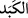

“Fî kebed” zorluklara katlanıcı/meşakkat çekici mânâsına “el-insan” kelimesinden
haldir Biz insanı zorluklara katlanıcı/meşakkat çekici halde yarattık, demektir.
“Fî” harfi ile “lam” harfi birbirine yakın harflerdir. Buna göre âyetin mânâsı ‘Biz
insanı zorluklar için yarattık’ demek olur.)
Başka bir açıklamada şu şekildedir: “Fî kebed” sözü zorluk ve meşakkatin insanı
zarfın içine konulan nesneyi kuşattığı gibi kuşattığına delâlet eder. Buna göre mânâ
şöyledir: ‘Biz insanı sıkıntı ve meşakkat içinde yarattık.’ Çünkü insan yaratılmışların en
zayıfı iken türlü sıkıntı ve zorluklara göğüs gerer. Bu sıkıntıların başlangıcı ana
rahminin karanlığı ve darlığı, sonu ise ölüm ve ardından gelenlerdir. Âdemoğlu
başkasının göğüs germediği bir çok sıkıntıyla mücadele eder. Yâni “zorluklar”
dünyanın bütün sıkıntılarını içerir. İnsanın göbeğinin kesilmesinden eli ayağı bağlanmış
olarak bir bez parçasına sarılmasına, sünnet olmayı ve acılarını çekmesine, öğretmen ve
onun hücumuna, hoca ve onun heybetine katlanmaya, sonra evlenme meşgaleleri, çoluk-
çocuk ve hizmetçilerle ve meskenle uğraşmaya göğüs germeye, yaşlanıp kocamaya
kadar baş ağrısı, diş ağrısı, göz ağrısı, borç sıkıntısı ve benzeri sayılması mümkün
olmayan birçok sıkıntıya katlanır.
“Fî kebed” sözü mükellefiyetlerin zorluklarını da içine alır. Genişlikte şükretmek,
sıkıntıya sabretmek, oruç, namaz, zekat, hac, cihad gibi ibâdetleri edâya göğüs germek
gibi. Bunun ardından ölümün şiddetine, meleğin sorgusuna, kabrin karanlığına, daha
sonra öldükten sonra diriltilme, hesaba çeken Melik’in huzuruna arz olunma, Cennet
veya Cehennemde yerleşme yerine varıncaya kadar sıkıntılara göğüs gerer. Nitekim
Allah Teâlâ buyuruyor: “Siz elbette halden hale geçeceksiniz.” (el-İnşikâk, 84/19)
buyurmuştur.
İmam Fahreddin Râzî der ki: Dünyada Cennet lezzeti yoktur. Lezzet olduğu
zannedilen ise elemden kurtuluştan ibarettir. Yemek yerken alınan lezzet açlığın
eleminden kurtuluşdur. Giyilirken duyulan lezzet sıcak ve soğuğun eleminden kurtuluştur.
Şu halde insan için ya elem ya da elemden kurtulmak vardır.
Bu âyette Rasûlullah (s.a.) Kureyş kâfirlerinden çektiği sıkıntılardan dolayı teselli
edilmektedir.
Âyette varlık taayyünü kaydıyla kayıtlı olan insanın taayyün yorgunluğu ve sıkıntısı
içinde yaratıldığına işâret vardır. Bunda mutlaktan ve onun nûrundan mahrumiyet
sözkonusudur. Çünkü taayyün kaydıyla kayıtlı olan mutlaktan mahrum olmak azabına
dûçar olur.
Kâşânî der ki: Andolsun biz insanı kendi nefsinden ve hevasından ya da bâtın
hastalığından, kalp fesadından ve hicabın kalınlığından kaynaklanan bir meşakkat ve
sıkıntı içinde yarattık. Çünkü “__WORD__ sözlükte tabîî gücün kaynağı olan ciğerin katılığı ve
bozulması demektir. Kalbin hicabı/perdelenmesi ve bozulması da bu güçten kaynaklanır.
İşte ciğerin katılığı ifâdesi istiâre yoluyla kalp hicabının katılığı ve cehalet hastalığı
anlamına kullanılmıştır.